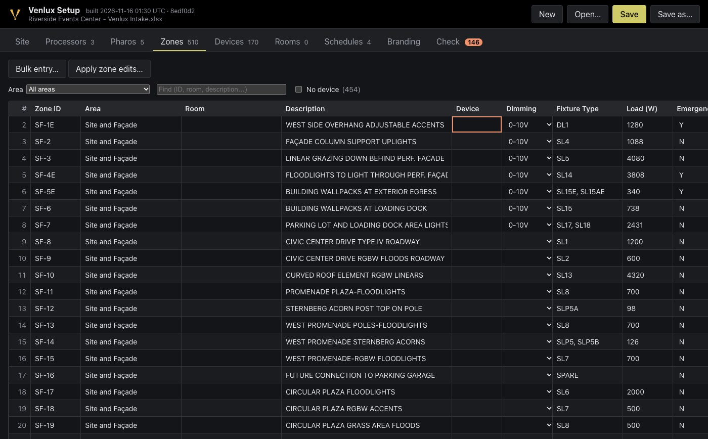
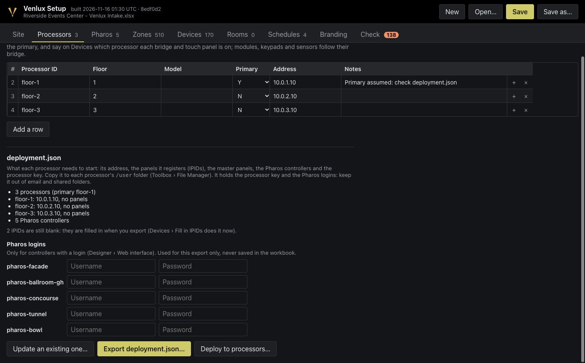

It just works, in every room.
Your staff walk up to a panel with your logo on it, tap the scene they want, and the room changes. Nobody needs a manual.

Your brand, not ours
Panels rest on your logo, colors and the time. The words can match your venue too: call rooms "suites" if that is what you call them.
Scenes, not switches
Welcome, Dinner, Presentation, Dance. One tap sets every light in the room, and one slider makes the whole scene brighter or dimmer.

Rooms that divide
Open the airwall and the ballrooms act as one: one scene, one slider, on every panel in the space.
On a schedule
Lights follow the clock, sunrise and sunset, event days and holidays, so the building is ready before anyone arrives.
One master for the site
From the master on an iPad or a browser, see every area, run site-wide scenes and spot a problem before a guest does.
Keeps running
Each floor's processor runs its own rooms. If it loses touch with the rest of the building, its panels and keypads carry on.
Deliver it faster. Leave it tidier.
Venlux turns the lighting schedule you already have into a working system, with every step from drawings to commissioning on one path.
Describe the site in Venlux Setup
One workbook holds the site: areas, rooms, zones, devices and processors. Venlux Setup fills it in with you and checks it as you go.
- Bulk entry for rooms that repeat
- Filters for one area, or zones with no device yet
- Still opens in Excel

Deploy to the processors
Venlux Setup sends each processor its site and restarts the program. The login is asked for each time, never saved.
- Every IP device gets its IPID
- One panel file for every site
- The previous version is kept

Find the devices and match them
The master scans the network and matches what it finds to the plan. You see which zones are online and which aren't.
- Cresnet IDs and IPIDs laid out per bridge
- A guided flow for replacing a failed device
- Keypad drawings and engraving sheets

Commission and walk away
A checklist confirms the site is ready, then a commissioning snapshot records how you left it. Daily copies are kept on every processor.
- Users with their own logins and access levels
- An activity log of who changed what
- Restore in one step if something goes wrong

A processor per floor, one site.
- The primary holds the shared site: scenes, schedules, users.
- Every processor drives its own floor's Zūm devices and Pharos controllers.
- A panel on one floor can run rooms on another: commands travel through the primary.
- If a link drops, each floor keeps running its own rooms.
Everything a venue's lighting needs.
Zones and scenes
Hundreds of zones grouped into areas and rooms, with room scenes, area presets and site-wide scenes.
Color and white
DMX fixtures through Pharos controllers: full color, color plus white and tunable white.
Occupancy
Sensors and timeouts per room, run by the Zūm devices themselves or by Venlux.
Keypads
Zūm and Cresnet keypads with drawn layouts, button actions and lit buttons.
Schedules
By time, sunrise or sunset, with event days and holidays on a site calendar.
Users and access
Administrator, technician and user levels, PINs on touch panels, an activity log.
Integrations
Other control systems can recall scenes and read status, with their own scoped keys.
Backups
Daily copies on every processor and a commissioning snapshot that never rotates out.
Ask your integrator about Venlux.
Venlux is installed and supported by lighting and AV integrators who know your building.
See the screens you'd use on a job.
Every screen from the office to handover, from a demo site, in the installer guide.
Open the installer guide